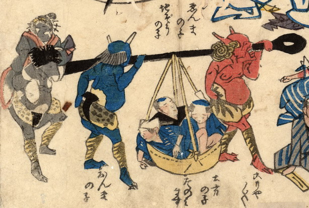

赤鬼、青鬼、墨色の鬼が、金棒に通したもっこを担いでいる。もっこの中には3人の男の亡者が載っている。墨色の鬼は、簪を3本さした、芸者のような女の亡者を背負っている。
出典：親書誌：U426_nichibunken_0170：地震冥途ノ図；ジシンメイドノズ／日付：2010／資源識別子：U426_nichibunken_0170_0006_0000
Copyright (c)2010- International Research Center for Japanese Studies, Kyoto, Japan. All rights reserved.